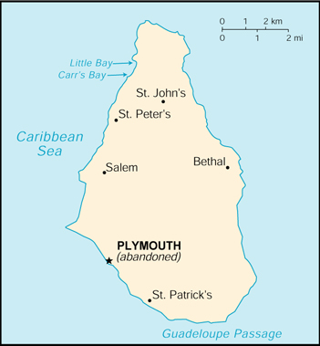

(overseas territory of the UK)

|
Montserrat (overseas territory of the UK) |
|
| Introduction Geography People Government Economy Communications Transportation Military Transnational Issues | ||
|  | ||
| Montserrat | Introduction | Top of Page |
| Background: | Much of this island has been devastated and two-thirds of the population has fled abroad due to the eruption of the Soufriere Hills volcano that began on 18 July 1995. |
| Montserrat | Geography | Top of Page |
| Location: | Caribbean, island in the Caribbean Sea, southeast of Puerto Rico |
| Geographic coordinates: | 16 45 N, 62 12 W |
| Map references: | Central America and the Caribbean |
| Area: |
total:
100 sq km
land: 100 sq km water: 0 sq km |
| Area - comparative: | about 0.6 times the size of Washington, DC |
| Land boundaries: | 0 km |
| Coastline: | 40 km |
| Maritime claims: |
exclusive fishing zone:
200 NM
territorial sea: 3 NM |
| Climate: | tropical; little daily or seasonal temperature variation |
| Terrain: | volcanic islands, mostly mountainous, with small coastal lowland |
| Elevation extremes: |
lowest point:
Caribbean Sea 0 m
highest point: Chances Peak (in the Soufriere Hills) 914 m |
| Natural resources: | NEGL |
| Land use: |
arable land:
20%
permanent crops: 0% permanent pastures: 10% forests and woodland: 40% other: 30% (1993 est.) |
| Irrigated land: | NA sq km |
| Natural hazards: | severe hurricanes (June to November); volcanic eruptions (full-scale eruptions of the Soufriere Hills volcano occurred during 1996-97) |
| Environment - current issues: | land erosion occurs on slopes that have been cleared for cultivation |
| Montserrat | People | Top of Page |
| Population: |
7,574
note: an estimated 8,000 refugees left the island following the resumption of volcanic activity in July 1995; some have returned (July 2001 est.) |
| Age structure: |
0-14 years:
23.83% (male 907; female 898)
15-64 years: 64.66% (male 2,341; female 2,556) 65 years and over: 11.51% (male 464; female 408) (2001 est.) |
| Population growth rate: | 13.39% (2001 est.) |
| Birth rate: | 17.43 births/1,000 population (2001 est.) |
| Death rate: | 7.53 deaths/1,000 population (2001 est.) |
| Net migration rate: | 123.98 migrant(s)/1,000 population (2001 est.) |
| Sex ratio: |
at birth:
1.05 male(s)/female
under 15 years: 1.01 male(s)/female 15-64 years: 0.92 male(s)/female 65 years and over: 1.14 male(s)/female total population: 0.96 male(s)/female (2001 est.) |
| Infant mortality rate: | 8.19 deaths/1,000 live births (2001 est.) |
| Life expectancy at birth: |
total population:
78.03 years
male: 75.95 years female: 80.22 years (2001 est.) |
| Total fertility rate: | 1.82 children born/woman (2001 est.) |
| HIV/AIDS - adult prevalence rate: | NA% |
| HIV/AIDS - people living with HIV/AIDS: | NA |
| HIV/AIDS - deaths: | NA |
| Nationality: |
noun:
Montserratian(s)
adjective: Montserratian |
| Ethnic groups: | black, white |
| Religions: | Anglican, Methodist, Roman Catholic, Pentecostal, Seventh-Day Adventist, other Christian denominations |
| Languages: | English |
| Literacy: |
definition:
age 15 and over has ever attended school
total population: 97% male: 97% female: 97% (1970 est.) |
| Montserrat | Government | Top of Page |
| Country name: |
conventional long form:
none
conventional short form: Montserrat |
| Dependency status: | overseas territory of the UK |
| Government type: | NA |
| Capital: | Plymouth (abandoned in 1997 due to volcanic activity; interim government buildings have been built at Brades, in the Carr's Bay/Little Bay vicinity at the northwest end of Montserrat) |
| Administrative divisions: | 3 parishes; Saint Anthony, Saint Georges, Saint Peter's |
| Independence: | none (overseas territory of the UK) |
| National holiday: | Birthday of Queen ELIZABETH II, second Saturday in June (1926) |
| Constitution: | present constitution came into force 19 December 1989 |
| Legal system: | English common law and statutory law |
| Suffrage: | 18 years of age; universal |
| Executive branch: |
chief of state:
Queen ELIZABETH II (since 6 February 1952), represented by Governor Anthony John ABBOTT (since NA September 1997)
head of government: Chief Minister David BRANDT (since 22 August 1997) cabinet: Executive Council consists of the governor, the chief minister, three other ministers, the attorney general, and the finance secretary elections: the monarch is hereditary; governor appointed by the monarch; following legislative elections, the leader of the majority party usually becomes chief minister; note - as a result of the last election, a coalition party was formed between NPP, NDP, and one of the independent candidates |
| Legislative branch: |
unicameral Legislative Council (11 seats, 7 popularly elected; members serve five-year terms)
elections: last held 11 November 1996 (next to be held by NA November 2001) election results: percent of vote by party - NA%; seats by party - PPA 2, MNR 2, NPP 1, independent 2 |
| Judicial branch: | Eastern Caribbean Supreme Court (based in Saint Lucia, one judge of the Supreme Court is a resident of the islands and presides over the High Court) |
| Political parties and leaders: | Movement for National Reconstruction or MNR [Percival Austin BRAMBLE]; National Development Party or NDP [leader NA]; National Progressive Party or NPP [Reuben T. MEADE]; People's Progressive Alliance or PPA [John A. OSBORNE] |
| Political pressure groups and leaders: | NA |
| International organization participation: | Caricom, CDB, ECLAC (associate), ICFTU, Interpol (subbureau), OECS, WCL |
| Diplomatic representation in the US: | none (overseas territory of the UK) |
| Diplomatic representation from the US: | none (overseas territory of the UK) |
| Flag description: | blue, with the flag of the UK in the upper hoist-side quadrant and the Montserratian coat of arms centered in the outer half of the flag; the coat of arms features a woman standing beside a yellow harp with her arm around a black cross |
| Montserrat | Economy | Top of Page |
| Economy - overview: | Severe volcanic activity, which began in July 1995, has put a damper on this small, open economy. A catastrophic eruption in June 1997 closed the airports and seaports, causing further economic and social dislocation. Two-thirds of the 12,000 inhabitants fled the island. Some began to return in 1998, but lack of housing limited the number. The agriculture sector continued to be affected by the lack of suitable land for farming and the destruction of crops. Prospects for the economy depend largely on developments in relation to the volcano and on public sector construction activity. The UK committed to a three year $125 million aid program in 1999 to help reconstruct the economy. |
| GDP: | purchasing power parity - $31 million (1999 est.) |
| GDP - real growth rate: | -1.5% (1999 est.) |
| GDP - per capita: | purchasing power parity - $5,000 (1999 est.) |
| GDP - composition by sector: |
agriculture:
5.4%
industry: 13.6% services: 81% (1996 est.) |
| Population below poverty line: | NA% |
| Household income or consumption by percentage share: |
lowest 10%:
NA%
highest 10%: NA% |
| Inflation rate (consumer prices): | 5% (1998) |
| Labor force: | 4,521 (1992); note - recently lowered by flight of people from volcanic activity |
| Labor force - by occupation: | agriculture NA%, industry NA%, services NA% |
| Unemployment rate: | 20% (1996 est.) |
| Budget: |
revenues:
$31.4 million
expenditures: $31.6 million, including capital expenditures of $8.4 million (1997 est.) |
| Industries: | tourism, rum, textiles, electronic appliances |
| Industrial production growth rate: | NA% |
| Electricity - production: | 10 million kWh (1999) |
| Electricity - production by source: |
fossil fuel:
100%
hydro: 0% nuclear: 0% other: 0% (1999) |
| Electricity - consumption: | 9.3 million kWh (1999) |
| Electricity - exports: | 0 kWh (1999) |
| Electricity - imports: | 0 kWh (1999) |
| Agriculture - products: | cabbages, carrots, cucumbers, tomatoes, onions, peppers; livestock products |
| Exports: | $1.5 million (1998) |
| Exports - commodities: | electronic components, plastic bags, apparel, hot peppers, live plants, cattle |
| Exports - partners: | US, Antigua and Barbuda (1993) |
| Imports: | $26 million (1998) |
| Imports - commodities: | machinery and transportation equipment, foodstuffs, manufactured goods, fuels, lubricants, and related materials |
| Imports - partners: | US, UK, Trinidad and Tobago, Japan, Canada (1993) |
| Debt - external: | $8.9 million (1997) |
| Economic aid - recipient: | $9.8 million (1995); note - about $100 million (1996-98) in reconstruction aid from the UK; Country Policy Plan (1999) is a three-year program for spending $122.8 million in British budgetary assistance |
| Currency: | East Caribbean dollar (XCD) |
| Currency code: | XCD |
| Exchange rates: | East Caribbean dollars per US dollar - 2.7000 (fixed rate since 1976) |
| Fiscal year: | 1 April - 31 March |
| Montserrat | Communications | Top of Page |
| Telephones - main lines in use: | 4,000 (1997) |
| Telephones - mobile cellular: | 70 (1994) |
| Telephone system: |
general assessment:
NA
domestic: NA international: NA |
| Radio broadcast stations: | AM 1, FM 2, shortwave 0 (1998) |
| Radios: | 7,000 (1997) |
| Television broadcast stations: | 1 (1997) |
| Televisions: | 3,000 (1997) |
| Internet country code: | .ms |
| Internet Service Providers (ISPs): | 17 (2000) |
| Internet users: | NA |
| Montserrat | Transportation | Top of Page |
| Railways: | 0 km |
| Highways: |
total:
269 km
paved: 203 km unpaved: 66 km (1995) |
| Waterways: | none |
| Ports and harbors: | Plymouth (abandoned), Little Bay (anchorages and ferry landing), Carr's Bay |
| Merchant marine: | none (2000 est.) |
| Airports: | 1 (2000 est.) |
| Airports - with paved runways: |
total:
1
under 914 m: 1 (2000 est.) |
| Montserrat | Military | Top of Page |
| Military branches: | Police Force |
| Military - note: | defense is the responsibility of the UK |
| Montserrat | Transnational Issues | Top of Page |
| Disputes - international: | none |
| Illicit drugs: | transshipment point for South American narcotics destined for the US and Europe |
{kind=link}